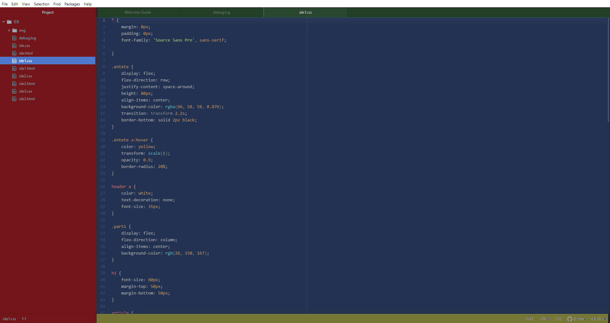

A T O M
Atom est un éditeur de texte libre pour macOS, GNU/Linux et Windows développé par GitHub. Il supporte
des plug-ins écrits en Node.js et implémente Git Control. La plupart des extensions sont sous licence
libre et sont maintenues par la communauté. Atom est basé sur Chromium et Electron et est écrit en
CoffeeScript10. Il est aussi utilisé en tant qu’environnement de développement (EDI).

Commande Git
Vos onglets ouvert